Quadratic Functions
Curved antennas, such as the ones shown in Figure 1, are commonly used to focus microwaves and radio waves to transmit television and telephone signals, as well as satellite and spacecraft communication. The cross-section of the antenna is in the shape of a parabola, which can be described by a quadratic function.
In this section, we will investigate quadratic functions, which frequently model problems involving area and projectile motion. Working with quadratic functions can be less complex than working with higher degree functions, so they provide a good opportunity for a detailed study of function behavior.
Recognizing Characteristics of Parabolas
The graph of a quadratic function is a U-shaped curve called a parabola. One important feature of the graph is that it has an extreme point, called the vertex. If the parabola opens up, the vertex represents the lowest point on the graph, or the minimum value of the quadratic function. If the parabola opens down, the vertex represents the highest point on the graph, or the maximum value. In either case, the vertex is a turning point on the graph. The graph is also symmetric with a vertical line drawn through the vertex, called the axis of symmetry. These features are illustrated in Figure 2.
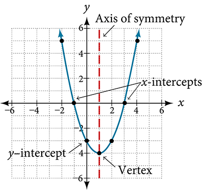
The y-intercept is the point at which the parabola crosses the y-axis. The x-intercepts are the points at which the parabola crosses the x-axis. If they exist, the x-intercepts represent the zeros, or roots, of the quadratic function, the values of at which
Identifying the Characteristics of a Parabola
Determine the vertex, axis of symmetry, zeros, and intercept of the parabola shown in Figure 3.
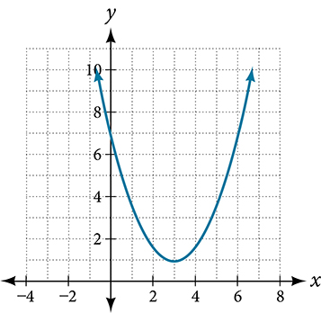
Solution
The vertex is the turning point of the graph. We can see that the vertex is at Because this parabola opens upward, the axis of symmetry is the vertical line that intersects the parabola at the vertex. So the axis of symmetry is This parabola does not cross the axis, so it has no zeros. It crosses the axis at so this is the y-intercept.
Understanding How the Graphs of Parabolas are Related to Their Quadratic Functions
The general form of a quadratic function presents the function in the form
where and are real numbers and If the parabola opens upward. If the parabola opens downward. We can use the general form of a parabola to find the equation for the axis of symmetry.
The axis of symmetry is defined by If we use the quadratic formula, to solve for the intercepts, or zeros, we find the value of halfway between them is always the equation for the axis of symmetry.
Figure 4 represents the graph of the quadratic function written in general form as In this form, and Because the parabola opens upward. The axis of symmetry is This also makes sense because we can see from the graph that the vertical line divides the graph in half. The vertex always occurs along the axis of symmetry. For a parabola that opens upward, the vertex occurs at the lowest point on the graph, in this instance, The intercepts, those points where the parabola crosses the axis, occur at and
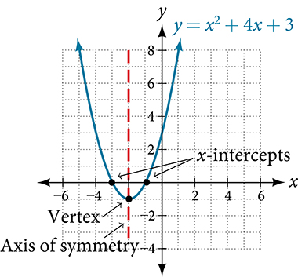
The standard form of a quadratic function presents the function in the form
where is the vertex. Because the vertex appears in the standard form of the quadratic function, this form is also known as the vertex form of a quadratic function.
As with the general form, if the parabola opens upward and the vertex is a minimum. If the parabola opens downward, and the vertex is a maximum. Figure 5 represents the graph of the quadratic function written in standard form as Since in this example, In this form, and Because the parabola opens downward. The vertex is at
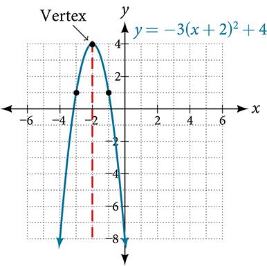
The standard form is useful for determining how the graph is transformed from the graph of Figure 6 is the graph of this basic function.
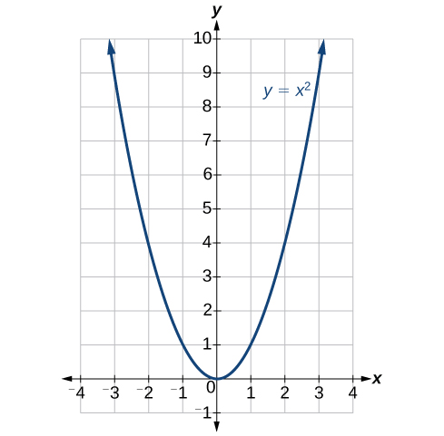
If the graph shifts upward, whereas if the graph shifts downward. In Figure 5, so the graph is shifted 4 units upward. If the graph shifts toward the right and if the graph shifts to the left. In Figure 5, so the graph is shifted 2 units to the left. The magnitude of indicates the stretch of the graph. If the point associated with a particular value shifts farther from the x-axis, so the graph appears to become narrower, and there is a vertical stretch. But if the point associated with a particular value shifts closer to the x-axis, so the graph appears to become wider, but in fact there is a vertical compression. In Figure 5, so the graph becomes narrower.
The standard form and the general form are equivalent methods of describing the same function. We can see this by expanding out the general form and setting it equal to the standard form.
For the linear terms to be equal, the coefficients must be equal.
This is the axis of symmetry we defined earlier. Setting the constant terms equal:
In practice, though, it is usually easier to remember that k is the output value of the function when the input is so
Writing the Equation of a Quadratic Function from the Graph
Write an equation for the quadratic function in Figure 7 as a transformation of and then expand the formula, and simplify terms to write the equation in general form.
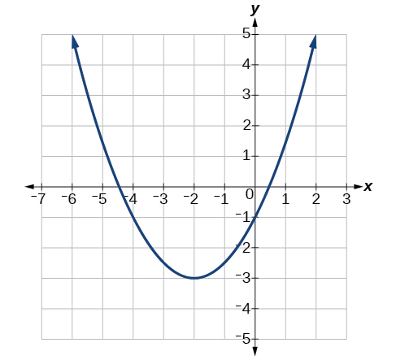
Solution
We can see the graph of g is the graph of shifted to the left 2 and down 3, giving a formula in the form
Substituting the coordinates of a point on the curve, such as we can solve for the stretch factor.
In standard form, the algebraic model for this graph is
To write this in general polynomial form, we can expand the formula and simplify terms.
Notice that the horizontal and vertical shifts of the basic graph of the quadratic function determine the location of the vertex of the parabola; the vertex is unaffected by stretches and compressions.
Finding the Vertex of a Quadratic Function
Find the vertex of the quadratic function Rewrite the quadratic in standard form (vertex form).
Solution
The horizontal coordinate of the vertex will be at
The vertical coordinate of the vertex will be at
Rewriting into standard form, the stretch factor will be the same as the in the original quadratic.
Using the vertex to determine the shifts,
Analysis
One reason we may want to identify the vertex of the parabola is that this point will inform us where the maximum or minimum value of the output occurs, and where it occurs,
Finding the Domain and Range of a Quadratic Function
Any number can be the input value of a quadratic function. Therefore, the domain of any quadratic function is all real numbers. Because parabolas have a maximum or a minimum point, the range is restricted. Since the vertex of a parabola will be either a maximum or a minimum, the range will consist of all y-values greater than or equal to the y-coordinate at the turning point or less than or equal to the y-coordinate at the turning point, depending on whether the parabola opens up or down.
Finding the Domain and Range of a Quadratic Function
Find the domain and range of
Solution
As with any quadratic function, the domain is all real numbers.
Because is negative, the parabola opens downward and has a maximum value. We need to determine the maximum value. We can begin by finding the value of the vertex.
The maximum value is given by
The range is or
Determining the Maximum and Minimum Values of Quadratic Functions
The output of the quadratic function at the vertex is the maximum or minimum value of the function, depending on the orientation of the parabola. We can see the maximum and minimum values in Figure 9.
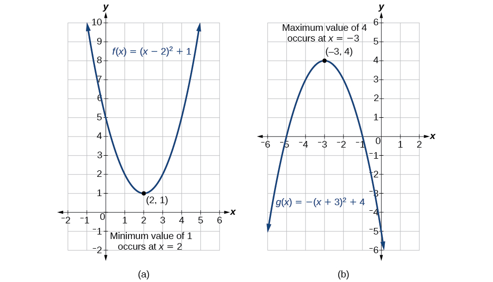
There are many real-world scenarios that involve finding the maximum or minimum value of a quadratic function, such as applications involving area and revenue.
Finding the Maximum Value of a Quadratic Function
A backyard farmer wants to enclose a rectangular space for a new garden within her fenced backyard. She has purchased 80 feet of wire fencing to enclose three sides, and she will use a section of the backyard fence as the fourth side.
- ⓐ Find a formula for the area enclosed by the fence if the sides of fencing perpendicular to the existing fence have length
- ⓑ What dimensions should she make her garden to maximize the enclosed area?
Solution
Let’s use a diagram such as Figure 10 to record the given information. It is also helpful to introduce a temporary variable, to represent the width of the garden and the length of the fence section parallel to the backyard fence.
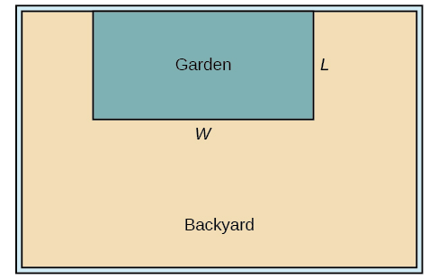
- ⓐ We know we have only 80 feet of fence available, and or more simply, This allows us to represent the width, in terms of
Now we are ready to write an equation for the area the fence encloses. We know the area of a rectangle is length multiplied by width, so
This formula represents the area of the fence in terms of the variable length The function, written in general form, is
- The quadratic has a negative leading coefficient, so the graph will open downward, and the vertex will be the maximum value for the area. In finding the vertex, we must be careful because the equation is not written in standard polynomial form with decreasing powers. This is why we rewrote the function in general form above. Since is the coefficient of the squared term, and
To find the vertex:
The maximum value of the function is an area of 800 square feet, which occurs when feet. When the shorter sides are 20 feet, there is 40 feet of fencing left for the longer side. To maximize the area, she should enclose the garden so the two shorter sides have length 20 feet and the longer side parallel to the existing fence has length 40 feet.
Analysis
This problem also could be solved by graphing the quadratic function. We can see where the maximum area occurs on a graph of the quadratic function in Figure 11.
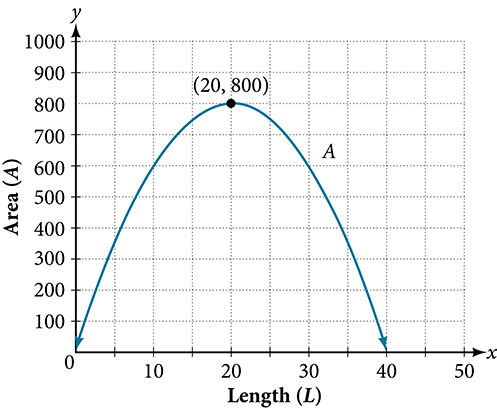
Finding Maximum Revenue
The unit price of an item affects its supply and demand. That is, if the unit price goes up, the demand for the item will usually decrease. For example, a local newspaper currently has 84,000 subscribers at a quarterly charge of $30. Market research has suggested that if the owners raise the price to $32, they would lose 5,000 subscribers. Assuming that subscriptions are linearly related to the price, what price should the newspaper charge for a quarterly subscription to maximize their revenue?
Solution
Revenue is the amount of money a company brings in. In this case, the revenue can be found by multiplying the price per subscription times the number of subscribers, or quantity. We can introduce variables, for price per subscription and for quantity, giving us the equation
Because the number of subscribers changes with the price, we need to find a relationship between the variables. We know that currently and We also know that if the price rises to $32, the newspaper would lose 5,000 subscribers, giving a second pair of values, and From this we can find a linear equation relating the two quantities. The slope will be
This tells us the paper will lose 2,500 subscribers for each dollar they raise the price. We can then solve for the y-intercept.
This gives us the linear equation relating cost and subscribers. We now return to our revenue equation.
We now have a quadratic function for revenue as a function of the subscription charge. To find the price that will maximize revenue for the newspaper, we can find the vertex.
The model tells us that the maximum revenue will occur if the newspaper charges $31.80 for a subscription. To find what the maximum revenue is, we evaluate the revenue function.
Analysis
This could also be solved by graphing the quadratic as in Figure 12. We can see the maximum revenue on a graph of the quadratic function.
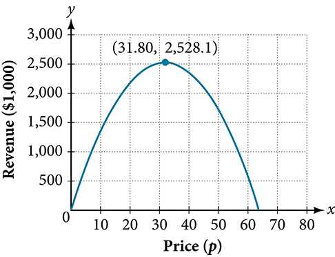
Finding the x- and y-Intercepts of a Quadratic Function
Much as we did in the application problems above, we also need to find intercepts of quadratic equations for graphing parabolas. Recall that we find the intercept of a quadratic by evaluating the function at an input of zero, and we find the intercepts at locations where the output is zero. Notice in Figure 13 that the number of intercepts can vary depending upon the location of the graph.
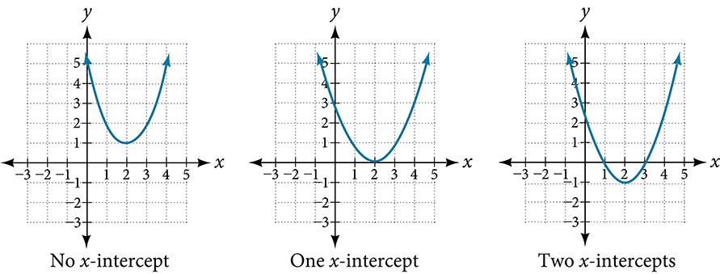
Finding the y- and x-Intercepts of a Parabola
Find the y- and x-intercepts of the quadratic
Solution
We find the y-intercept by evaluating
So the y-intercept is at
For the x-intercepts, we find all solutions of
In this case, the quadratic can be factored easily, providing the simplest method for solution.
So the x-intercepts are at and
Analysis
By graphing the function, we can confirm that the graph crosses the y-axis at We can also confirm that the graph crosses the x-axis at and See Figure 14
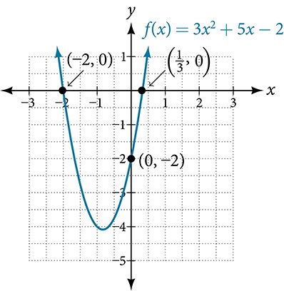
Rewriting Quadratics in Standard Form
In Example 7, the quadratic was easily solved by factoring. However, there are many quadratics that cannot be factored. We can solve these quadratics by first rewriting them in standard form.
Finding the Intercepts of a Parabola
Find the intercepts of the quadratic function
Solution
We begin by solving for when the output will be zero.
Because the quadratic is not easily factorable in this case, we solve for the intercepts by first rewriting the quadratic in standard form.
We know that Then we solve for and
So now we can rewrite in standard form.
We can now solve for when the output will be zero.
The graph has intercepts at and
Analysis
We can check our work by graphing the given function on a graphing utility and observing the intercepts. See Figure 15.
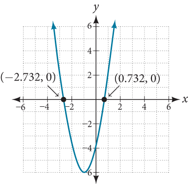
Solving a Quadratic Equation with the Quadratic Formula
Solve
Solution
Let’s begin by writing the quadratic formula:
When applying the quadratic formula, we identify the coefficients For the equation we have Substituting these values into the formula we have:
The solutions to the equation are and or and
Applying the Vertex and x-Intercepts of a Parabola
A ball is thrown upward from the top of a 40 foot high building at a speed of 80 feet per second. The ball’s height above ground can be modeled by the equation
- ⓐ When does the ball reach the maximum height?
- ⓑ What is the maximum height of the ball?
- ⓒ When does the ball hit the ground?
Solution
- ⓐ The ball reaches the maximum height at the vertex of the parabola.
The ball reaches a maximum height after 2.5 seconds.
- ⓑ To find the maximum height, find the coordinate of the vertex of the parabola.
The ball reaches a maximum height of 140 feet.
- ⓒ To find when the ball hits the ground, we need to determine when the height is zero,
We use the quadratic formula.
Because the square root does not simplify nicely, we can use a calculator to approximate the values of the solutions.
The second answer is outside the reasonable domain of our model, so we conclude the ball will hit the ground after about 5.458 seconds. See Figure 16
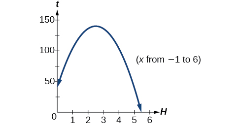
Figure 16
Key Equations
| general form of a quadratic function | |
| the quadratic formula | |
| standard form of a quadratic function |
Key Concepts
- A polynomial function of degree two is called a quadratic function.
- The graph of a quadratic function is a parabola. A parabola is a U-shaped curve that can open either up or down.
- The axis of symmetry is the vertical line passing through the vertex. The zeros, or intercepts, are the points at which the parabola crosses the axis. The intercept is the point at which the parabola crosses the axis. See Example 1, Example 7, and Example 8.
- Quadratic functions are often written in general form. Standard or vertex form is useful to easily identify the vertex of a parabola. Either form can be written from a graph. See Example 2.
- The vertex can be found from an equation representing a quadratic function. See Example 3.
- The domain of a quadratic function is all real numbers. The range varies with the function. See Example 4.
- A quadratic function’s minimum or maximum value is given by the value of the vertex.
- The minimum or maximum value of a quadratic function can be used to determine the range of the function and to solve many kinds of real-world problems, including problems involving area and revenue. See Example 5 and Example 6.
- Some quadratic equations must be solved by using the quadratic formula. See Example 9.
- The vertex and the intercepts can be identified and interpreted to solve real-world problems. See Example 10.
Section Exercises
Verbal
Explain the advantage of writing a quadratic function in standard form.
Solution
When written in that form, the vertex can be easily identified.
How can the vertex of a parabola be used in solving real world problems?
Explain why the condition of is imposed in the definition of the quadratic function.
Solution
If then the function becomes a linear function.
What is another name for the standard form of a quadratic function?
What two algebraic methods can be used to find the horizontal intercepts of a quadratic function?
Solution
If possible, we can use factoring. Otherwise, we can use the quadratic formula.
Algebraic
For the following exercises, rewrite the quadratic functions in vertex form and give the vertex.
Solution
Vertex
Solution
Vertex
Solution
Vertex
Solution
Vertex
For the following exercises, determine whether there is a minimum or maximum value to each quadratic function. Find the value and the axis of symmetry.
Solution
Minimum is and occurs at Axis of symmetry is
Solution
Minimum is and occurs at Axis of symmetry is
Solution
Minimum is and occurs at Axis of symmetry is
For the following exercises, determine the domain and range of the quadratic function.
Solution
Domain is Range is
Solution
Domain is Range is
Solution
Domain is Range is
For the following exercises, solve the equations over the complex numbers.
Solution
Solution
Solution
Solution
Solution
Solution
Solution
Solution
Solution
For the following exercises, use the vertex and a point on the graph to find the general form of the equation of the quadratic function.
Solution
Solution
Solution
Solution
Graphical
For the following exercises, sketch a graph of the quadratic function and give the vertex, axis of symmetry, and intercepts.
Solution
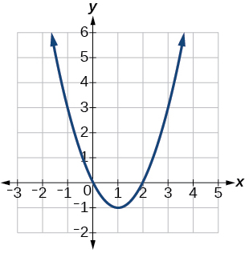
Vertex Axis of symmetry is Intercepts are
Solution
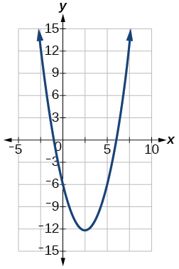
Vertex Axis of symmetry is intercepts:
Solution
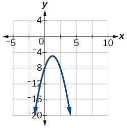
Vertex Axis of symmetry is Intercepts are
For the following exercises, write the equation for the graphed function.
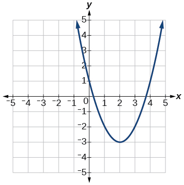
Solution
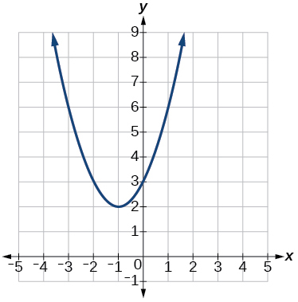
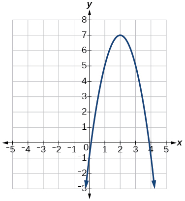
Solution
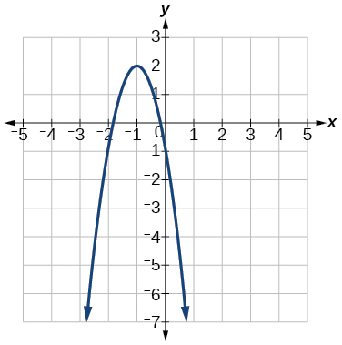
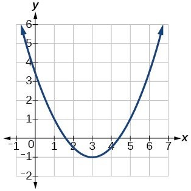
Solution
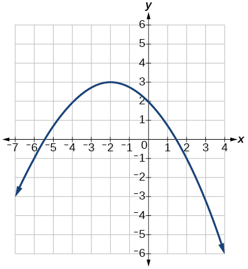
Numeric
For the following exercises, use the table of values that represent points on the graph of a quadratic function. By determining the vertex and axis of symmetry, find the general form of the equation of the quadratic function.
| –2 | –1 | 0 | 1 | 2 | |
| 5 | 2 | 1 | 2 | 5 |
Solution
| –2 | –1 | 0 | 1 | 2 | |
| 1 | 0 | 1 | 4 | 9 |
| –2 | –1 | 0 | 1 | 2 | |
| –2 | 1 | 2 | 1 | –2 |
Solution
| –2 | –1 | 0 | 1 | 2 | |
| –8 | –3 | 0 | 1 | 0 |
| –2 | –1 | 0 | 1 | 2 | |
| 8 | 2 | 0 | 2 | 8 |
Solution
Technology
For the following exercises, use a calculator to find the answer.
Graph on the same set of axes the functions
What appears to be the effect of changing the coefficient?
Graph on the same set of axes and and What appears to be the effect of adding a constant?
Solution
The graph is shifted up or down (a vertical shift).
Graph on the same set of axes , , ,
What appears to be the effect of adding or subtracting those numbers?
The path of an object projected at a 45 degree angle with initial velocity of 80 feet per second is given by the function where is the horizontal distance traveled and is the height in feet. Use the TRACE feature of your calculator to determine the height of the object when it has traveled 100 feet away horizontally.
Solution
50 feet
A suspension bridge can be modeled by the quadratic function with where is the number of feet from the center and is height in feet. Use the TRACE feature of your calculator to estimate how far from the center does the bridge have a height of 100 feet.
Extensions
For the following exercises, use the vertex of the graph of the quadratic function and the direction the graph opens to find the domain and range of the function.
Vertex opens up.
Solution
Domain is Range is
Vertex opens down.
Vertex opens down.
Solution
Domain is Range is
Vertex opens up.
For the following exercises, write the equation of the quadratic function that contains the given point and has the same shape as the given function.
Contains and has shape of Vertex is on the axis.
Solution
Contains and has the shape of Vertex is on the axis.
Contains and has the shape of Vertex is on the axis.
Solution
Contains and has the shape of Vertex is on the axis.
Contains and has the shape of Vertex is on the axis.
Solution
Contains has the shape of Vertex has x-coordinate of
Real-World Applications
Find the dimensions of the rectangular corral producing the greatest enclosed area given 200 feet of fencing.
Solution
50 feet by 50 feet. Maximize
Find the dimensions of the rectangular corral split into 2 pens of the same size producing the greatest possible enclosed area given 300 feet of fencing.
Find the dimensions of the rectangular corral producing the greatest enclosed area split into 3 pens of the same size given 500 feet of fencing.
Solution
125 feet by 62.5 feet. Maximize
Among all of the pairs of numbers whose sum is 6, find the pair with the largest product. What is the product?
Among all of the pairs of numbers whose difference is 12, find the pair with the smallest product. What is the product?
Solution
and product is –36; maximize
Suppose that the price per unit in dollars of a cell phone production is modeled by where is in thousands of phones produced, and the revenue represented by thousands of dollars is Find the production level that will maximize revenue.
A rocket is launched in the air. Its height, in meters above sea level, as a function of time, in seconds, is given by Find the maximum height the rocket attains.
Solution
2909.56 meters
A ball is thrown in the air from the top of a building. Its height, in meters above ground, as a function of time, in seconds, is given by How long does it take to reach maximum height?
A soccer stadium holds 62,000 spectators. With a ticket price of $11, the average attendance has been 26,000. When the price dropped to $9, the average attendance rose to 31,000. Assuming that attendance is linearly related to ticket price, what ticket price would maximize revenue?
Solution
$10.70
A farmer finds that if she plants 75 trees per acre, each tree will yield 20 bushels of fruit. She estimates that for each additional tree planted per acre, the yield of each tree will decrease by 3 bushels. How many trees should she plant per acre to maximize her harvest?
Analysis
We can check our work using the table feature on a graphing utility. First enter Next, select then use and and select See Table 1.
The ordered pairs in the table correspond to points on the graph.